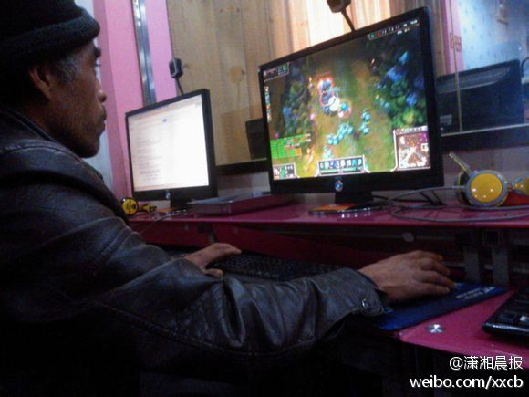

在这次#开源峰会#上，@淘宝正明 说目前很多开源项目的一大障碍就是不能做到拿来就用，事情起来门槛有些高。把快速部署和快速上手做到位，对开源项目的推广和应用帮助很大。@hoowasun:发现CSDN也在宣传“开源“是拿来就用的，看来CSDN这种专业网站对开源理解的也是一知半解。网页链接
经验之谈。//@青萍快剑_Horry: 很多开源项目需要花一定的学习时间成本和改造成本，而且文档很少！//@Ada李力: 在这次#开源峰会#上，@淘宝正明 说目前很多开源项目的一大障碍就是不能做到拿来就用，实践起来门槛有些高。把快速部署和快速上手做到位，对开源项目的推广和应用帮助很大。@hoowasun:发现CSDN也在宣传“开源“是拿来就用的，看来CSDN这种专业网站对开源理解的也是一知半解。网页链接
这是专为@StephanieYR 建的网站吗？要说Stephanie最近很用功，每天都更新学习笔记。 网页链接 [呵呵]@跟黄哥学编程:编程女生（Girls Who Code）【使命】 非政府组织“编程女生”（Girls Who Code）的使命是，教授广大年轻女性计算机相关知识，激发年轻女性对科学技术的兴趣和灵感，使广大年轻女性能在计算机技术领域找到一份不错的工作。 网页链接
励志老汉。//@sina坊间八卦:正能量！产品狗们！自学编程吧！此生再不求技术！@潇湘晨报:【七旬老汉电脑自学成才变高手 编游戏自己玩】70岁的潘家鸿，是电脑高手。不过，他玩的游戏在网上找不到，是他自己在电脑上用程序独创编写的。这个电脑游戏叫“相八付”，是骨牌的一种，源于潘阿爹儿时跟叔叔学玩的游戏。潘家鸿1981年起就开始学习电脑知识了。网页链接 #图文无关# 
回复@百由_鲁义明:CSDN网站上的，都是公司自己开发的软件产品呀。前台的有论坛，博客，下载，问答，俱乐部，项目交易平台，庞果网，若干移动端产品，CODE平台…… 还有后台软件……@Ada李力:最近几次线下活动中，接触到不少资深技术人员，告诉我：他2000年初就是CSDN的用户；他买过第一期《程序员杂志》；他曾经担任过版主；他一直写着博客…… 我很惭愧的是，如果不是他们当面告诉我，我对他们在CSDN上的活动一无所知。我还忘了问很重要的问题：他们希望获得什么样的产品和服务？
回复@百由_鲁义明:才反应过来，百由说的是社区中孕育出像Linux那样的软件产品吧。 //@百由_鲁义明:csdn是个大社区，俺希望大社区，能够不只孕育人气，也能至少孕育出来一个软件，以及支持这个软件的开发维护团队 //@百由_鲁义明:希望csdn出一个自己的软件产品。@Ada李力:最近几次线下活动中，接触到不少资深技术人员，告诉我：他2000年初就是CSDN的用户；他买过第一期《程序员杂志》；他曾经担任过版主；他一直写着博客…… 我很惭愧的是，如果不是他们当面告诉我，我对他们在CSDN上的活动一无所知。我还忘了问很重要的问题：他们希望获得什么样的产品和服务？


 网页链接 [呵呵]
网页链接 [呵呵]